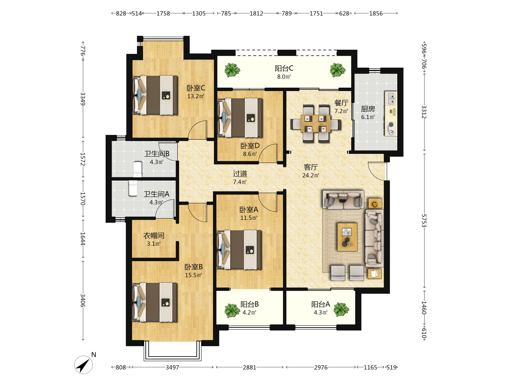

先确定整片36秒设计，再讨论每一镜
户型认知 → 公共活动区 → 阳台联系 → 卧室分工 → 厨房 → 辅助区 → 资料收尾
所有图片都是同套原始静态素材的取景参考，不是新录画面。章节预算不是执行时间轴；箭头不是行走路径。
户型锚点

同ID原图 · 非模型飞入
先交代空间格局，避免观众不知道是哪一套。
候选：同套原户型
标签/竖屏可读性待核
客厅 / 餐厅

原始面参考 · 不是最终构图
公共区完整主体优先，展示客餐关系。
候选：0/1/2/5/6
点位/方向逐镜再定
阳台空间

独立阳台点 · 不穿门推进
从阳台展示真实联系，整体阶段不定角度。
优先3/4；9/10可替代
第三阳台未绑定
代表性双卧


两房独立画面 · 房间字母未绑
床/柜与窗的关系；不称已拍完四卧。
高低床13–15 / 白床16–19
两房之间硬切
厨房

保留现状 · 不推设备功能
操作台/灶台联系，避免夸大材质。
候选：7/8
具体方向/构图待核
收纳 / 卫浴


两处独立画面 · 不拼套房走入
补生活分工，不证明主卧套间连通。
柜体32 / 卫浴33–35
可删减，先整体确认
空间资料
仅指向实际可提供的资料
明确可查看的户型/空间，不承诺约看。
资料与权限核对后
再写CTA和字幕
原户型：只作整体布局锚点
保留原图；不将panoIndex当房间ID，不把候选点位贴成已核证平面路径。
整体阶段先定什么，局部阶段再定什么
现在：七章主线＋36秒预算＋统一衔接
先决定展示哪些空间、顺序与份量，是否采用定点环视和硬切，保持仅内部/普通话匿名/零新增付费。
整体确认后：逐镜选点和实测
再讨论当前镜主体、yaw/FOV、起止方向、真实视角/净空、镜长、声音与防覆盖输出。候选池不是已测执行配方。
不能由整体图自动通过的项目
其他点的原生视角例外、米级高度/0.5m净空、全屋room-ID映射、声音权利、全部镜头或试片接受，仍需相应核证与许可。
既有6秒take01不主导新整体
冻结未接受，不自动计入36秒、不决定开场或构图。本轮没有新视频、配音或费用。
确认顺序：先整体后局部
整体计划＋整体图 → 你确认整体 → 只讨论当前一镜 → 明确许可并试拍 → 你审该SHA → 下一镜
V2待整体确认 · 36秒＝3＋8＋5＋8＋4＋5＋3；转换时间计入章节预算，不额外叠加。素材为同套3月原始资料，图示不是现场新拍/实时房况或商业发布权利证明。方言当前不做。